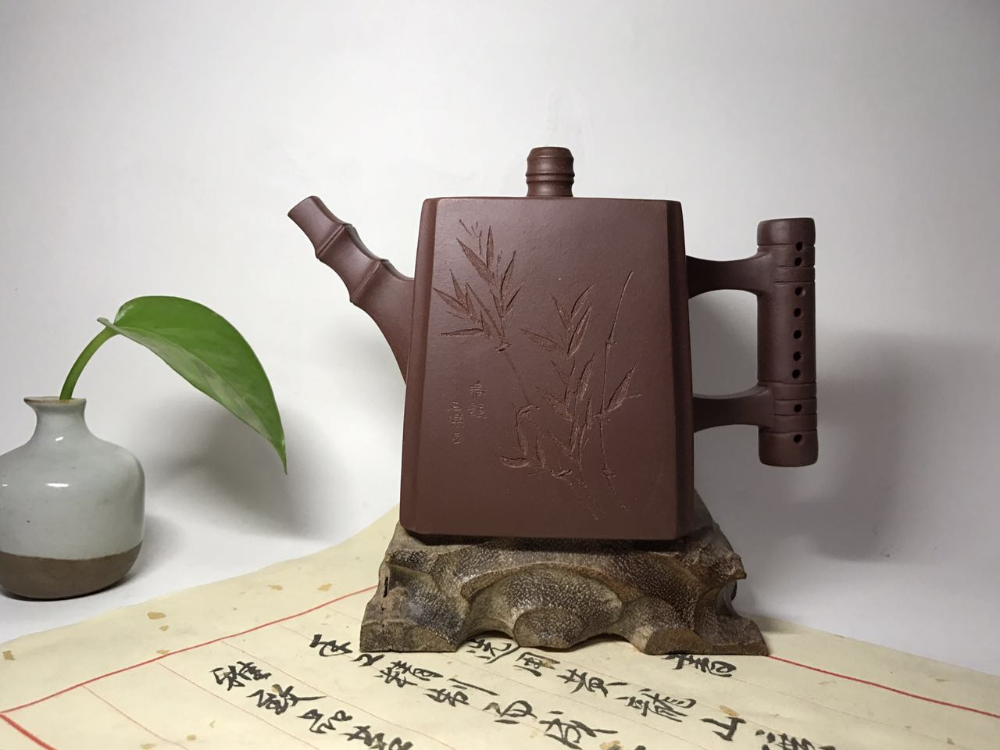
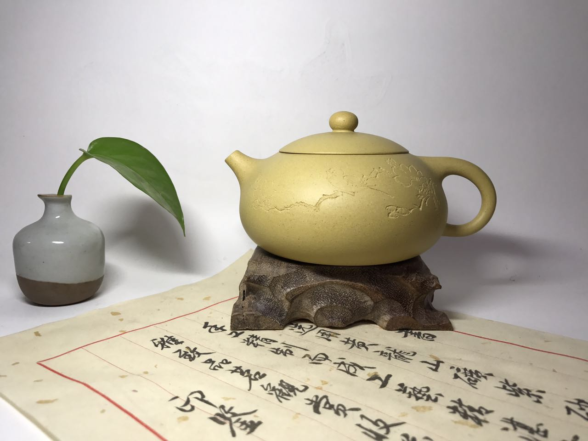
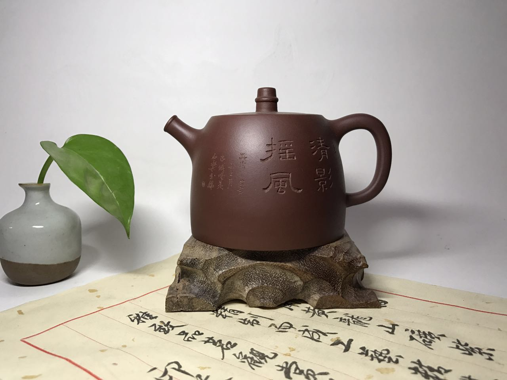
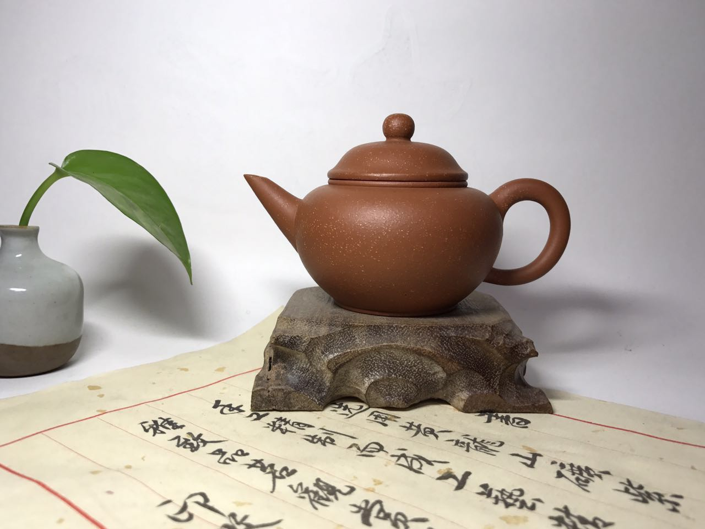

90年代初出生于宜兴紫砂村制壶世家，自小受紫砂传统文化的熏陶并热衷于紫砂陶艺的创作，师从国家级高级工艺美术师胡敖君。 从艺过程中深受师傅悉心教导和提携，虚心请教他人并取其所长，经过不断努力，不断创新、求实、刻苦钻研，并逐步形成自己独有的风格。所设计的作品以传统见长，并不失端庄与典雅，制作工艺日趋成熟，深受国内各地藏家喜爱和珍藏。 获得奖项：2016中国壶艺大赛一等奖
竹笛壶
西施壶
王珠壶
汉铎壶
汉平壶
紫砂壶共有五大类，分别为圆壶、方壶、筋纹器、花塑器、提梁。这五大类又有很多小类
最早见于近代赵松亭按吴大徴授意所作,身扁、腹鼓、颈高、盖板平滑，壶盖与口沿子母线吻合严密，合成圆线饱满，扁钮有力，虹钮有势，二弯流胥出自然 ;圆圈把匀势而起，有些款把圆下有垂，富于灵动，整体骨肉亭匀，收展有度，有一气呵成之畅

 王珠壶
王珠壶